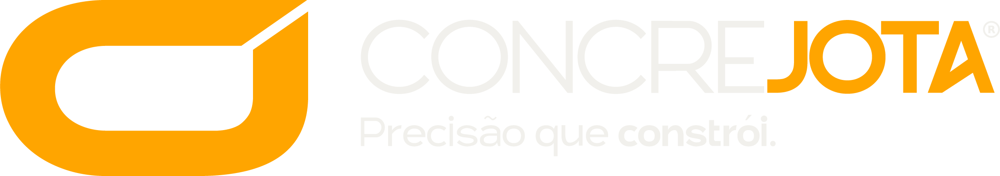

Solicitação enviada
com sucesso!
Obrigado pelo contato! Recebemos a sua solicitação de orçamento e a nossa equipe técnica entrará em contato em breve para preparar a melhor proposta em concreto usinado para a sua obra.
Enviamos também um e-mail de confirmação para o endereço informado. Não esqueça de conferir a caixa de spam.
ConcreJota — Uma empresa do Grupo FAJ